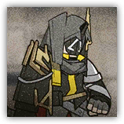
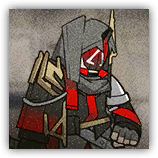

深池伙友影刃 Dublinn Companion Shadowblade
近战 物理；精英 类人
|
 |
搭档型刺客。依靠卫队掩护进行突袭与速杀。 深池部队中精锐行动队里的一员，比普通行动队成员拥有更强的作战能力。影刃与搭档一起行动时，拥有超强的隐匿能力，进攻也更为迅猛。 |
深池伙友影刃丨Dublinn Companion Shadowblade
中型或大型类人（任意；伙友），守序中立
| AC 15 | 先攻 +4（14） |
| HP 85（10d10+30） | |
| 速度 35尺 | |
| 调整 | 豁免 | 调整 | 豁免 | 调整 | 豁免 | |||||||||
|---|---|---|---|---|---|---|---|---|---|---|---|---|---|---|
| 力量 | 12 | +1 | +1 | 敏捷 | 18 | +4 | +6 | 体质 | 16 | +3 | +3 | |||
| 智力 | 10 | +0 | +0 | 感知 | 13 | +1 | +3 | 魅力 | 11 | +0 | +0 |
| 技能 隐匿+6，察觉+3 |
| 感官 黑暗视觉60尺，被动察觉13 |
| 语言 通用语，维多利亚语，塔拉语 |
| CR 5（XP 1,800；PB +2） |
特质 Traits
折射抗性 Refraction Resistance。深池伙友影刃为抵抗法术或魔法效应而作的豁免具有优势。陷入沉默状态时此特性失效。
隐匿 Stealth。深池伙友影刃只要未处于任何敌人的触及距离内就获得隐形状态。它还因此在先攻检定上具有优势。
动作 Actions
多重攻击 Multiattack。深池伙友影刃进行两次长柄刀攻击。如果影刃位于另一个有伙友标签的盟友5尺内，则改为三次。
长柄刀 Longspear。近战武器攻击：+6，触及5尺。命中：15（2d10+4）点挥砍伤害。
深池伙友影刃精英 Dublinn Companion Shadowblade Elite
近战 物理；精英 类人

|
 |
搭档型刺客。依靠卫队掩护进行突袭与速杀。 深池部队中精锐行动队里的一员，比普通行动队成员拥有更强的作战能力。影刃与搭档一起行动时，拥有超强的隐匿能力，进攻也更为迅猛。 |
深池伙友影刃精英丨Dublinn Companion Shadowblade Elite
中型类人（任意；伙友），守序中立
| AC 16 | 先攻 +4（14） |
| HP 102（12d10+36） | |
| 速度 35尺 | |
| 调整 | 豁免 | 调整 | 豁免 | 调整 | 豁免 | |||||||||
|---|---|---|---|---|---|---|---|---|---|---|---|---|---|---|
| 力量 | 13 | +1 | +1 | 敏捷 | 19 | +4 | +7 | 体质 | 16 | +3 | +3 | |||
| 智力 | 11 | +0 | +0 | 感知 | 14 | +2 | +5 | 魅力 | 11 | +0 | +0 |
| 技能 隐匿+7，察觉+4 |
| 感官 黑暗视觉60尺，被动察觉14 |
| 语言 通用语，维多利亚语，塔拉语 |
| CR 7（XP 2,900；PB+3） |
特质 Traits
折射抗性 Refraction Resistance。深池伙友影刃为抵抗法术或魔法效应而作的豁免具有优势。陷入沉默状态时此特性失效。
隐匿 Stealth。深池伙友影刃只要未处于任何敌人的触及距离内就获得隐形状态。它还因此在先攻检定上具有优势。
动作 Actions
多重攻击 Multiattack。深池伙友影刃进行两次长柄刀攻击。如果影刃位于另一个有伙友标签的盟友5尺内，则改为三次。
长柄刀 Longspear。近战武器攻击：+6，触及5尺。命中：20（3d10+4）点挥砍伤害。